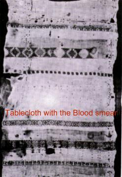
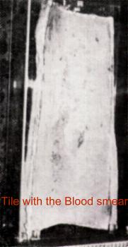
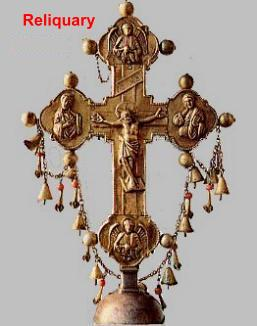
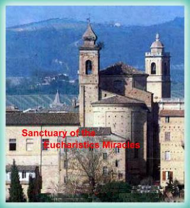
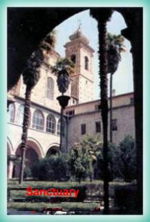

"OFFIDA, Italy, year 1273"
The Eucharistic miracle of Offida
in fact took place in the city of Lanciano, 
A woman named Ricciarella, the wife of Giacomo Stasio, deeply afflicted by her unhappy marriage, had tried everything at her disposal to win the love of her husband. Finally someone claimed to know of a way for her to achieve the harmony she desired. Ricciarella was advised to receive the Holy Eucharist, convey it to her kitchen, and heat it over the fire until a powder was obtained. This she was to put into the food or drink of her husband, who would then grow to love and respect her.
In desperation for relief from her sad situation, Ricciarella attended Holy Mass, received the Eucharist, and secretly let the Host fall from her mouth into the top of her dress. After taking it home she placed it on a semi-circular tile shaped like that which is placed along the ridge or summit of a roof. She then placed the tile over a fire. As soon as the sacred Host was heated, instead of turning into powder it began to turn into a piece of bloody flesh. Horrified at what was taking place, Ricciarella attempted to stop the process by throwing ashes and melted wax onto the tile, but without success. The tile soon bore a huge smear of blood, and the flesh remained perfectly sound.
Frantic for a way to dispose of the evidence of her sacrilege, Ricciarella took a linen tablecloth decorated with silk embroidery and lace and wrapped it around the tile and the bloody Host. Carrying the bundle outside, she went to the stable and buried it in the place where garbage from the house and filth from the stalls were heaped.
That evening when her husband Giacomo approached the stable with his horse, the animal refused to enter, contrary to its usual docile behavior, and remained stubborn despite a severe beating from its master. At last it relented, but instead of proceeding directly, it entered sideways, facing the heap of garbage, until at last it fell on its knees. Giacomo became violent at the sight and accused his wife of placing a spell on the stable that made the animal fearful of entering it. Ricciarella, of course, denied everything and remained silent about the cause of the difficulty.
For seven years the Blessed Sacrament remained hidden beneath the garbage, and for that period of time the animals went in or out sideways, appearing to show respect for the heap of refuse.
Instead of the peace Ricciarella had attempted to gain, she gained her sacrilege, which tormented day and night with remorse terrible, because of your sin. Finally she decided to confess what she had done to a priest from the Monastery of St. Agostino in Lanciano, Prior Diotallevi, a native of Offida.
Kneeling for confession,
Ricciarella found herself unable to speak through her 
- "This is my sin " , she said, "I have killed God!" Ricciarella then related the story of her sacrilege.
Surprised at what was finally disclosed to him, Father Diotallevi absolved Ricciarella, encouraged her to be at peace, and arranged to have the Host removed from the garbage pile without delay.
After vesting suitably, he journeyed to the stable and, unconcerned about disease or sickness, began to remove the garbage and filth. To his surprise, he discovered that the tile, the bloody Host, and the tablecloth were not contaminated, and looked as if they had been recently buried. Father Diotallevi then carried the tile, the Host, and the tablecloth to his Monastery.

The Reliquary is placed actualy on high atop the main altar of the Sanctuary of Saint Augustine in Offida, also known as the Sanctuary of the Miraculous Eucharist, it is an artistic arrangement which houses the silver cross containing the miraculous Host. The tile on which Ricciarella heated the Host, still showing the smear and splotches of blood, is kept in a rectangular glass-sided case. The tablecloth in which the tile and the bloody Host were wrapped is also kept under glass. Paintings depicting the events of the miracle can also be seen in the church.
In 1980, solemn services were observed in honor of the seventh centennial of the translation of the miraculous Host from Lanciano to Offida.



"NAJU, South Korea, 1985 to 1999"
Notables Supernatural Manifestations Eucharistic have happened at several countries and among them, we have to open a great space to the events in NAJU. Without a doubt they have gone spectaculars, sensational and impressive in all the aspects, besides admirable and mysterious, revealing above all, the CREATOR'S zeal proving the Christian Truth. We can affirm that OUR LORD truly exceeded, HE surpassed all possible limits of generosity, and fatherly HE accomplished extraordinary and unforgettable marvels. HE wants that the seeing whole world, understand the greatness and the readiness of the Divine Love and they decide looking for the conversion of the heart proving also we love the LORD.
For this reason, reverencing of the LORD's fascinating and immense generosity, APOSTOLATE is publishing with larger emphasis those Manifestations, especially building Site dedicated to the events in NAJU.
Name of the Site: " OUR LADY OF NAJU " (Eucharistic Miracles). It can be found in the address:
http://www.angelfire.com/nv/sacred/index8.html
We go to mention some facts that Site places in prominence with many images:
a) In more of twenty (20) different occasions, Julia Kim receiving the Holy Communion in your mouth during Holy Mass, the Consecrated Host if transform into the Body and Blood of CHRIST in the presence of all people amazed and admired with the notable Miracle. Many faithful were crying, shocked and replete of emotion, due the reality of seeing the alive Meat of the own GOD. The priests, layman and religious that have seen the miraculous event also have testified with conviction and enthusiasm the notable phenomenon.
b) Julia saw the crucified JESUS' image that's in wall of Naju Chapel to win life and of the main wounds to flow blood that soon became in white and pure Host. They have fallen down in free fall and have turned aside daintily of Julia's hands and if have placed well-comfortable in the Altar, at the feet of the MOTHER'S OF GOD image. The people have stayed full of emotion seeing suddenly the Host appear on the Altar, at the same time that they have heard the noise as if it was of a hailstorm when the Particles have touched the Altar. It was there to the eyes of everybody the seven pretty and perfect Host they have come from the wounds of the two hands, of the feet, of the head where was the Crown of Thorns, of the right side where the Roman Centurion nailed the lance and of the wound of the Heart, where the lance penetrated and has come out Blood and Water.
c) Twice, Julia catching the water of a nascent behind the Chapel, it appeared in the bottom of the vessel the image of a big Host.
d) In the roof of the Chapel the solar light formed the image of a Host great above a Chalice, in 1988, October.
This small text has the intention to invite you to visit the Site "OUR LADY OF NAJU" and to be benefited by the incomparable grace of to know about this impressive manifestation of the CREATOR.